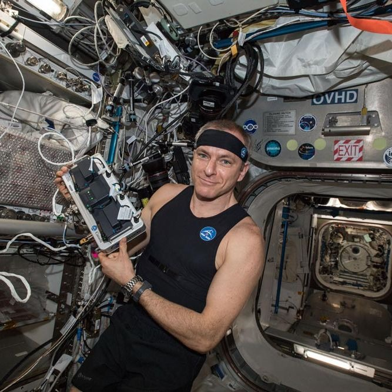
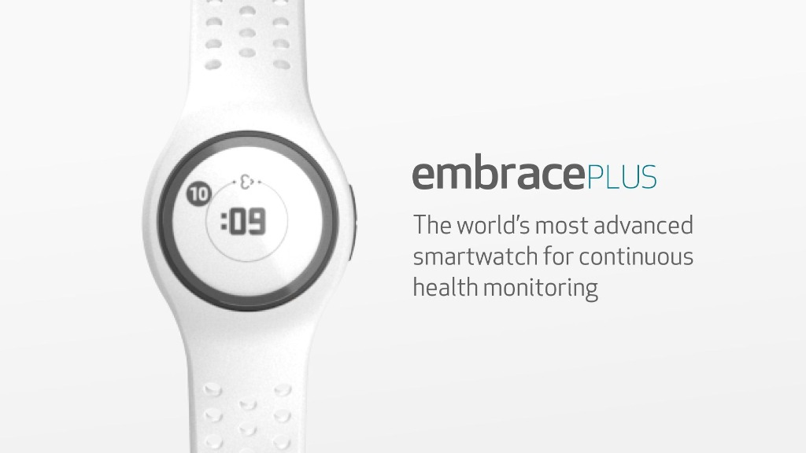
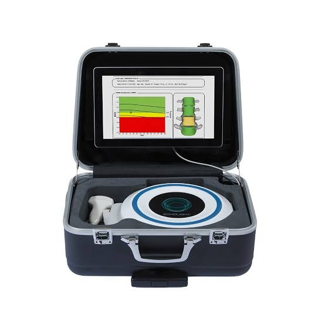
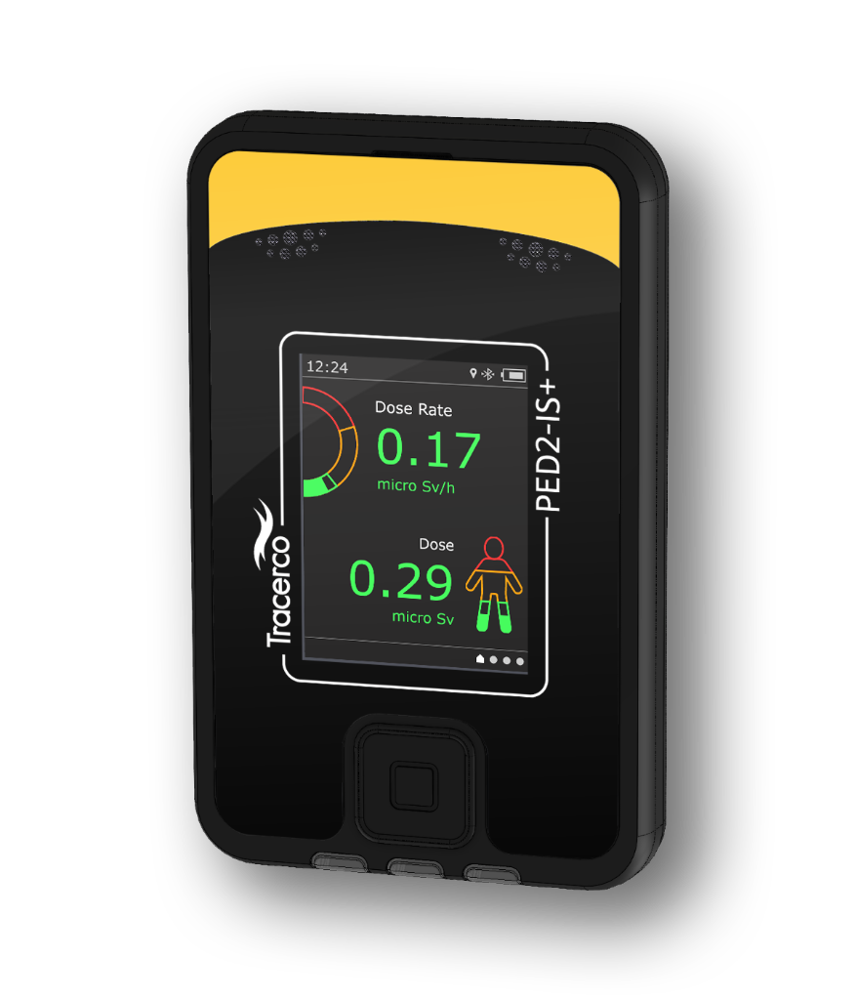
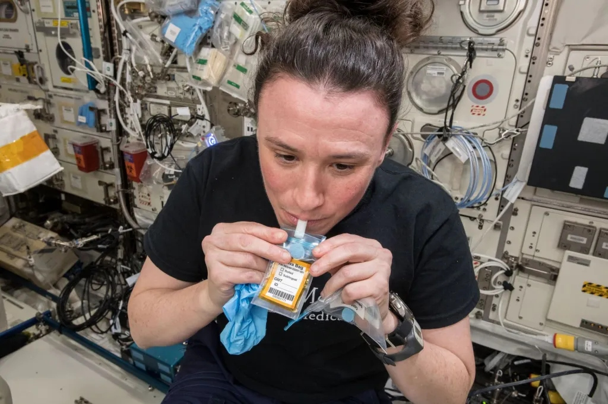
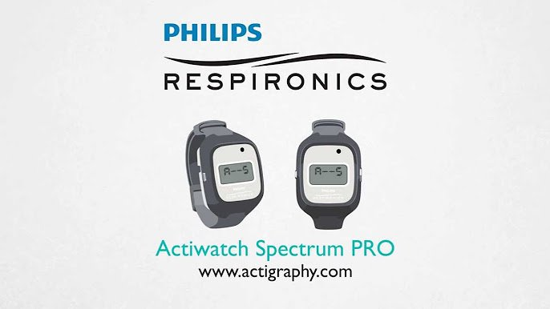

Surveillance Continue.
Santé Spatiale en Temps Réel.
Plateforme clinique autonome interconnectant 6 dispositifs spatiaux de pointe (maillot biométrique Astroskin, montre médicale EmbracePlus, actigraphes spatiaux Actiwatch / ActLumus Artemis II, dosimètre HRP, échographe REMS et biocapteurs) pour surveiller la santé des astronautes 24/7 en microgravité et anticiper les urgences sans latence Terre.
Microgravité Complexe.
Surveillance Continue.
Dans l'espace, l'absence de gravité bouleverse la biologie humaine : perte de volume sanguin, redistribution des liquides céphaliques, atrophie cardiaque et perte du tonus baroréflexe.
Lors d'une mission vers Mars ou la Lune, l'équipage ne peut pas attendre une réponse des médecins sur Terre en cas d'urgence. Santellite connecte les équipements biomédicaux à une intelligence clinique autonome.
Découvrir les 6 ÉquipementsTension Artérielle Sans Brassard
Calcul continu de la pression artérielle par temps de transit de l'onde de pouls (PTT), sans réveiller l'astronaute avec un brassard pneumatique.
Électrocardiogramme Continu
Analyse 3 dérivations en temps réel pour détecter les arythmies, la variabilité de la fréquence cardiaque (VFC) et le stress opérationnel.
Oxygénation & Thermorégulation
Capteurs SpO2 et température cutanée en continu pour anticiper l'hypoxie lors des sorties extravéhiculaires (EVA) et les coups de chaleur.
Diagnostic Clinique Embarqué
Algorithmes locaux capables de poser une alerte vitale immédiate, indépendamment du délai radio de communication avec la Terre.
Capteurs Portables Spatiaux.
Télémétrie Médicale Continue.
Pour assurer la santé de l'équipage en mission de longue durée, Santellite centralise la télémétrie de 6 dispositifs médicaux spatiaux réels : suivi cardiovasculaire continu, densité osseuse, dosimétrie et biomarqueurs salivaires.

Maillot Biométrique Spatial Astroskin
Conçu pour surveiller les astronautes 24h/24 sans entraver le sommeil ni les activités physiques. Il intègre des capteurs textiles brevetés pour mesurer en continu les fonctions vitales critiques.
Tension mesurée battement par battement (PTT) sans brassard gonflable.
Fréquence cardiaque et détection d'arythmies en continu.
Volume et fréquence respiratoire par double bande thoracique et abdominale.
Saturation en oxygène et sonde de thermorégulation intégrée.

Montre Médicale Spatiale EmbracePlus
Dispositif médical au poignet retenu pour les missions spatiales humaines (TRISH / NASA / Polaris Dawn). Conçue pour une surveillance physiologique continue de grade clinique en microgravité sans perturber les tâches de vol.
Mesure en continu de la réponse galvanique cutanée (GSR) pour évaluer le stress neurologique.
Fréquence cardiaque, variabilité (HRV) et estimation de la pression continue.
Suivi précis de la thermorégulation périphérique pour anticiper les chocs hypothermiques.
Analyse des mouvements, des phases de sommeil circadien et détection instantanée de chute.

Échographe Osseux Portable
Appareil de la taille d'une petite valise, utilisé par la NASA pour suivre la perte osseuse en microgravité. Mesure la densité et la microarchitecture osseuses par ultrasons, sans aucune radiation, avec un scan de moins de 10 minutes sur la colonne et le fémur.
Technologie à ultrasons (REMS), sans exposition aux rayons X.
Examen complet en moins de 10 minutes, répétable fréquemment.
Contrôle hebdomadaire plutôt qu'en continu, à la différence d'une montre.
Permet d'ajuster les contre-mesures (exercice, alimentation) en cours de mission.

Dosimètre Personnel de Radiations
Appareil porté en continu pour mesurer la dose de radiations spatiales reçue par l'astronaute. Essentiel pour un risque qu'aucun autre capteur corporel ne peut détecter directement, puisque les radiations n'affectent les constantes vitales que lentement et indirectement.
Suivi continu de l'exposition totale depuis le début de la mission.
Notification si la dose approche une limite définie pour la mission.
Répartition de la dose reçue par jour, semaine ou sortie extravéhiculaire.
Transmission au logiciel par liaison sans fil ou fichier d'export, selon le modèle.

Biocapteur Salivaire de Stress et d'Immunité
Laboratoire miniaturisé permettant d'analyser en temps réel des biomarqueurs salivaires directement à bord. Déjà testé sur la Station spatiale internationale pour mesurer le cortisol, un marqueur du stress chronique, et la DHEA-S, liée à l'équilibre du système immunitaire.
Test rapide sur un simple prélèvement de salive, sans prise de sang.
Biomarqueurs du stress chronique et de l'équilibre immunitaire.
Système prêt à l'emploi, sans entretien complexe.
Branchement par port USB à l'ordinateur de bord pour l'analyse.

Actigraphie Spatiale : Du Laboratoire au Vol Artemis II
Ces appareils ressemblent à des montres numériques, mais n'affichent pas toujours l'heure, afin de ne pas biaiser les études sur la perception du temps en mission. Deux générations d'actigraphes se succèdent dans le protocole ARCHeR (Artemis Research for Crew Health and Readiness) : l'historique Actiwatch Spectrum Plus de Philips pour établir les données de référence au sol, et l'ActLumus de la startup brésilienne Condor Instruments, embarqué en vol à bord de la capsule Orion depuis l'arrêt de la gamme Philips.
Utilisé au Fatigue Countermeasures Laboratory du NASA Ames Research Center pour établir les données de référence avant le vol (étude Artemis Sleep Countermeasures).
Suite à l'arrêt de la gamme Actiwatch par Philips, la NASA a adopté cet actigraphe brésilien pour le suivi continu de l'équipage à bord d'Orion pendant Artemis II.
Micro-mouvements du poignet enregistrés à environ 32 Hz, pour distinguer éveil, agitation et sommeil profond.
Mesure de l'intensité et du spectre de la lumière (bleue, rouge, verte) pour évaluer son effet sur le rythme circadien, en l'absence d'alternance jour-nuit naturelle.
Une liste non exhaustive
Les 6 dispositifs présentés ici sont ceux que nous avons pu identifier et documenter avec des sources fiables (agences spatiales, fabricants, études publiées) au cours de nos recherches. Ils ne représentent pas nécessairement l'ensemble des capteurs que la NASA utilise réellement pour surveiller la santé de ses astronautes en continu : d'autres instruments, notamment ceux encore classifiés, en développement, ou simplement absents des sources publiques que nous avons consultées, existent probablement. Santellite est conçu comme une architecture ouverte : chaque nouveau capteur documenté peut être intégré selon le même principe de centralisation, sans modifier la structure du logiciel.
Du Capteur Corporel
Au Diagnostic Vital.
Quatre étapes automatisées pour transformer les signaux physiologiques bruts en décisions cliniques rapides, sans dépendre du délai radio avec la Terre.
Captation Non-Invasive Continue
L'écosystème de 6 capteurs (textiles Astroskin, montres EmbracePlus et actigraphes spatiaux Actiwatch / ActLumus, dosimètre cosmique, échographe osseux et biocapteurs) mesure 24/7 l'ensemble des constantes vitales sans gêne opérationnelle.
Fusion & Traitement IA Embarqué
Le processeur local du hub médical analyse les signaux bruts en temps réel, filtre les artefacts de mouvement en microgravité et compare les constantes aux profils de référence de l'astronaute.
Alerte Clinique & Action Immédiate
Dès qu'un biomarqueur s'écarte des seuils de sécurité (syncope, arythmie sévère, chute de SpO2), une alerte visuelle et vibratoire guide immédiatement l'équipage dans le protocole de réanimation.
Transmission Longue Distance
Santellite ne nécessite aucune liaison radio dédiée : le logiciel centralise les données des 6 dispositifs connectés (Astroskin, EmbracePlus, actigraphie, dosimètre, échographe, biocapteur) puis les dépose sur le système de communication déjà existant du vaisseau, qui relaie ensuite vers le Deep Space Network de la NASA. Aucune infrastructure supplémentaire n'est requise pour une adoption institutionnelle.
Pourquoi la distance, pas le débit, est la seule limite
| Position Terre-Mars | Délai aller simple | Délai aller-retour |
|---|---|---|
| Rapprochement maximal | ~3 min | ~6 min |
| Distance moyenne | ~12,5 min | ~25 min |
| Éloignement maximal | ~22 min | ~44 min |
À chaque niveau de la chaîne (capteur → hub de bord → vaisseau → Terre), la capacité disponible dépasse largement les besoins d'un paquet de données de santé. Le facteur limitant n'est jamais le débit, mais la distance physique, à laquelle s'ajoute une bande passante du vaisseau partagée et priorisée avec les données scientifiques et opérationnelles. Santellite transmet donc des résumés compacts et priorisés, jamais un flux brut continu.
Si la NASA adopte Santellite :
- Le logiciel s'installe sur l'ordinateur de bord déjà existant du vaisseau ou de la station, sans nouveau matériel de communication.
- Il centralise en un point unique les données des 6 équipements biomédicaux déjà homologués, au lieu de 6 flux séparés.
- Il traite et décide localement (étapes 01 à 03), pour agir sans attendre une réponse de la Terre pendant les 3 à 44 minutes de délai incompressible.
- Il transmet uniquement des résumés compacts et priorisés au système de communication du vaisseau, qui relaie ensuite vers le Deep Space Network selon les protocoles déjà en place (bandes S, X ou Ka).
- Aucune dérogation technique, aucune nouvelle antenne, aucun nouveau protocole : Santellite s'intègre à l'infrastructure existante de la NASA plutôt que de la dupliquer.
Banc d'Essai Télémétrique IA.
Surveillance Continue en Temps Réel.
Aperçu instantané de la surveillance clinique des astronautes. Pour explorer la silhouette humaine interactive, les 4 environnements de mission (transit, station, rover, base planétaire) et les 6 scénarios cliniques complets, ouvrez le cockpit dédié.
Des référentiels scientifiques solides au cœur du modèle
Santellite s'appuie sur les archives ouvertes de la NASA, intégrant les résultats de décennies de recherche biomédicale menée à bord de l'ISS et lors des missions lunaires.
NASA OSDR / GeneLab
L'Open Science Data Repository regroupe les données omiques et biomoléculaires des organismes vivants exposés aux radiations spatiales et à la microgravité.
NASA LSDA (Life Sciences)
L'archive des sciences de la vie de la NASA collige les mesures physiologiques standard des équipages : électrocardiogrammes, tests DXA et bilans sanguins.
NASA HRP Evidence Books
Les livres de preuves du Human Research Program synthétisent l'état de l'art médical mondial sur chaque risque pour l'organisme humain en exploration spatiale.
Équipe 404 Introuvable
Participants au NASA Space Apps Challenge 2026 • Événement de Libreville (Gabon)